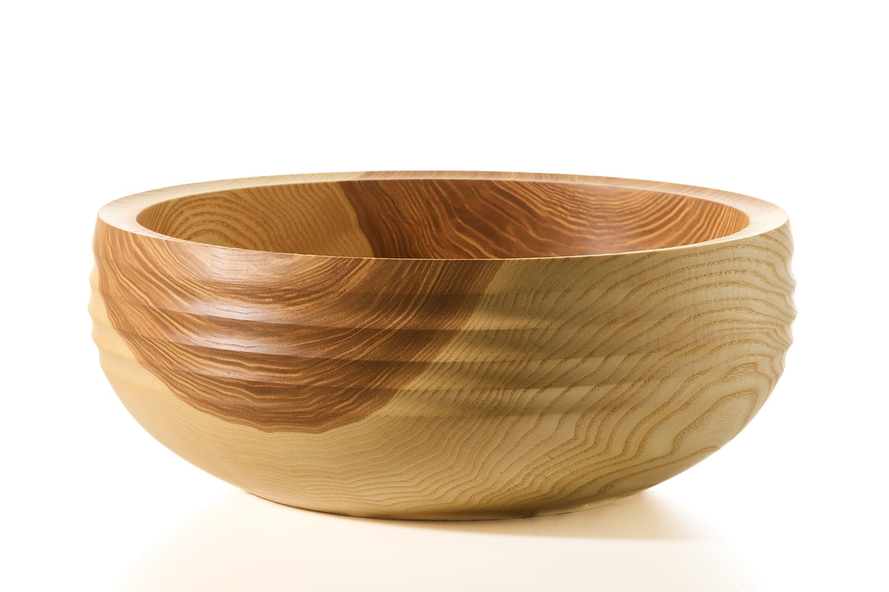
schue-drechselkunst · Weitnau
Holz mit
Charakter.
Handgedrechselte Kunststücke aus heimischen Hölzern. Natürlich gewachsen, individuell geformt und mit Leidenschaft gefertigt.
Kunststücke entdecken →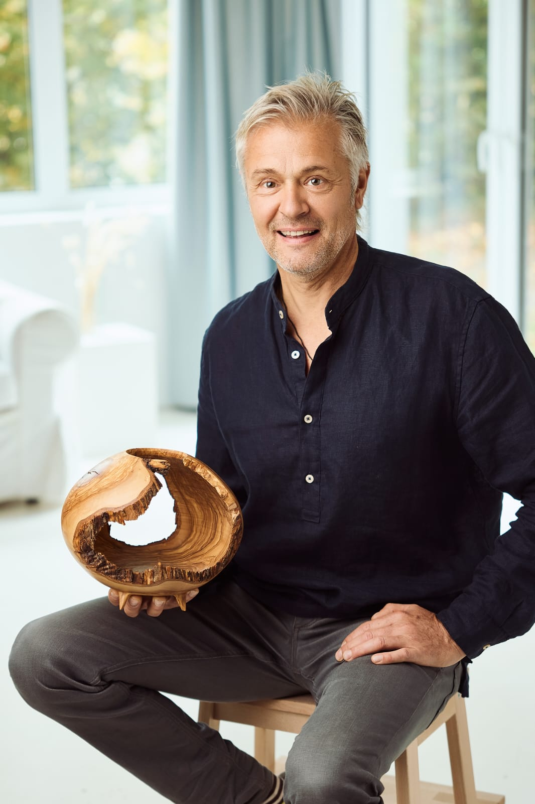
Handwerk · Holz · Unikate
Jedes Stück
ein Unikat.
Die Form entsteht aus dem Holz – nicht gegen das Holz. Natürliche Maserungen, Äste und Strukturen bleiben sichtbar und machen jedes Werkstück unverwechselbar.
Kunststücke
Aus Holz entsteht
Besonderes.
Eine Auswahl meiner Arbeiten
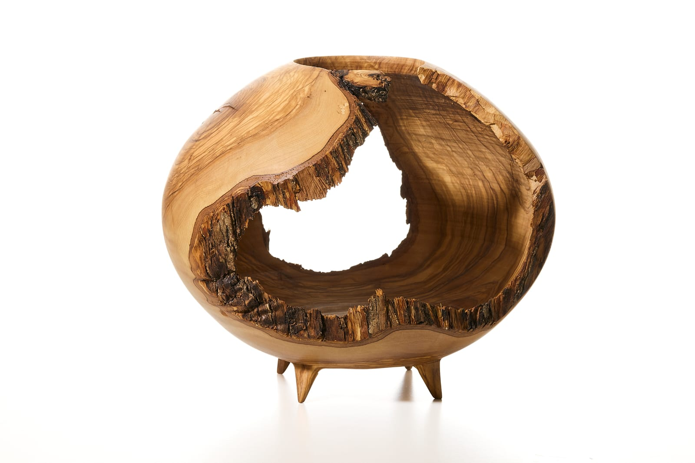
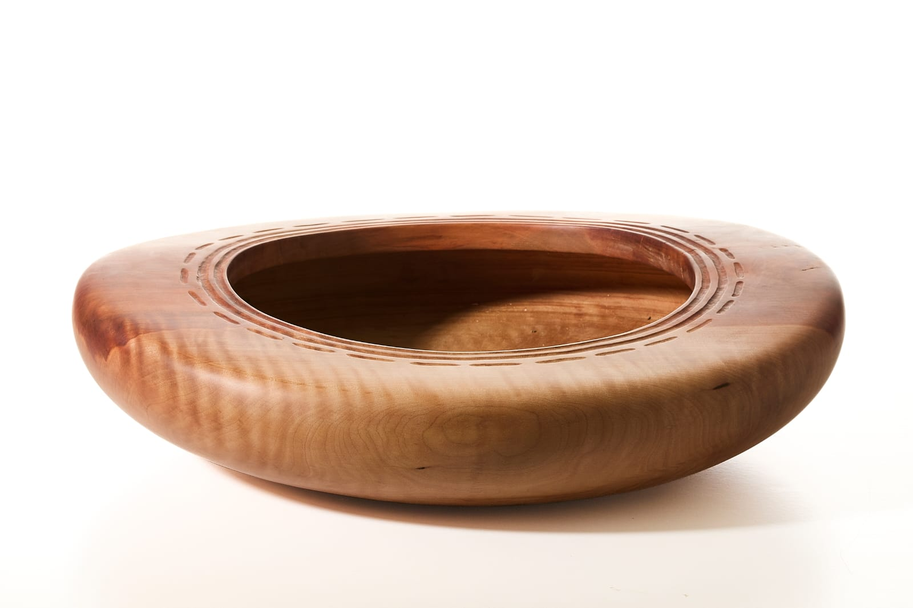
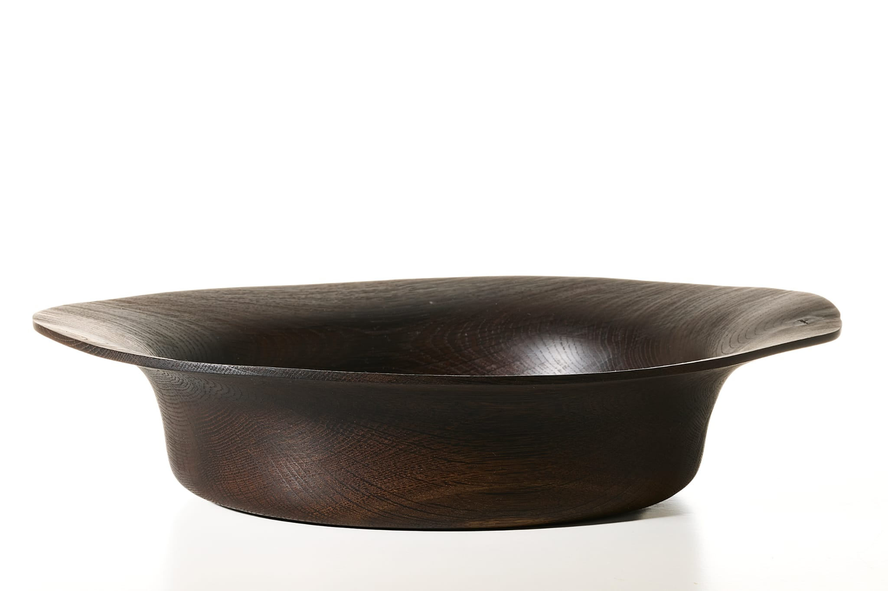
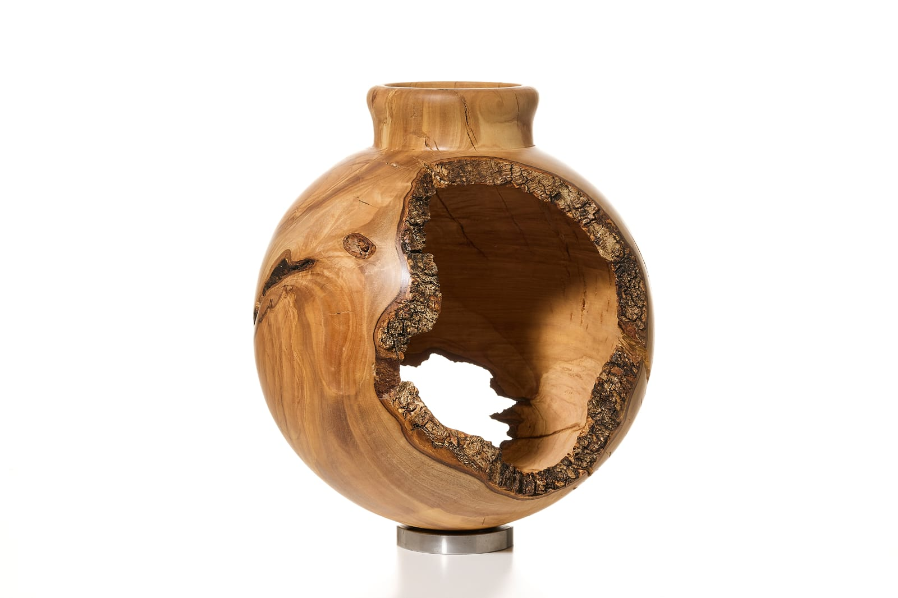
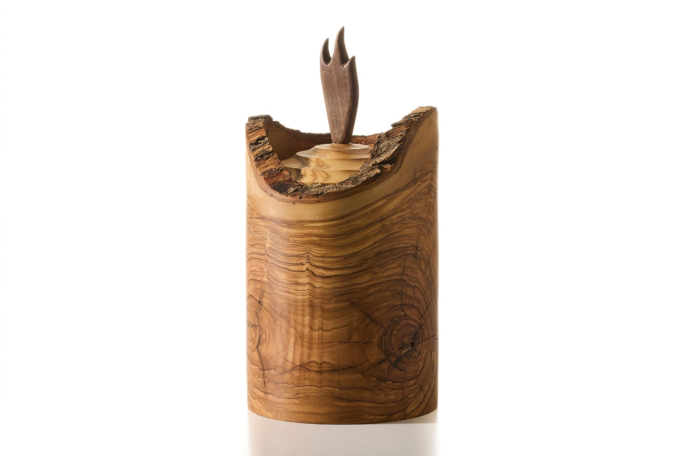
Urnen
Aus Erinnerung wird
ein Unikat.
Handgedrechselte Urnen aus heimischen Hölzern


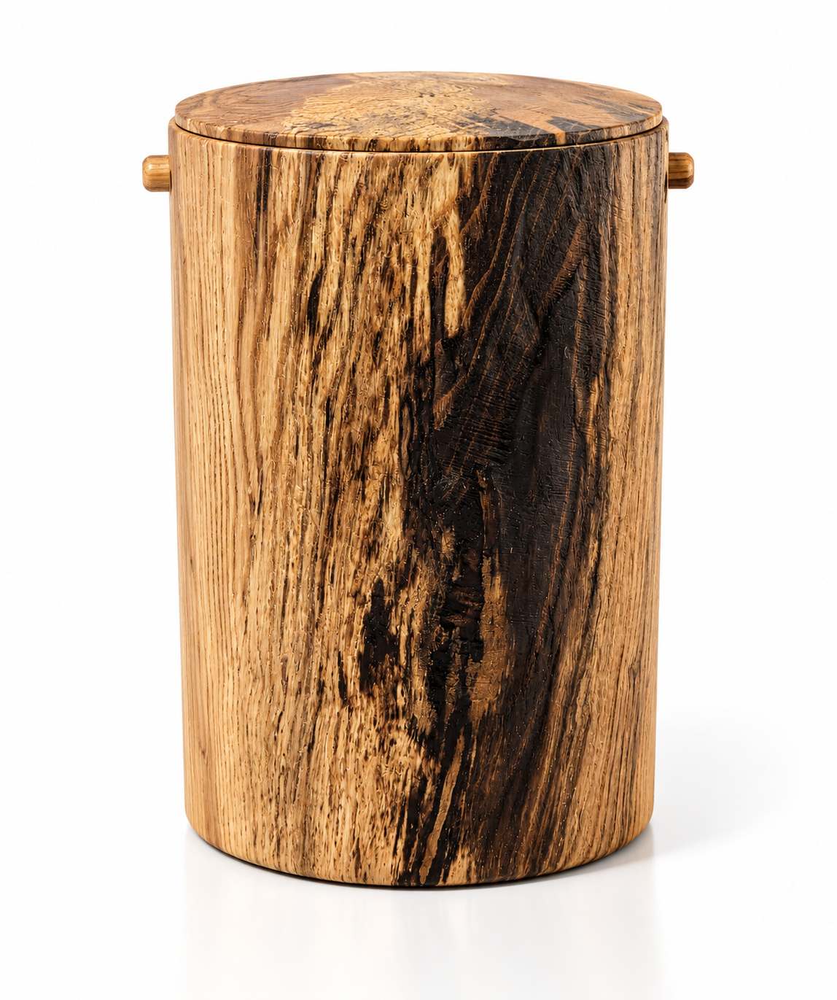
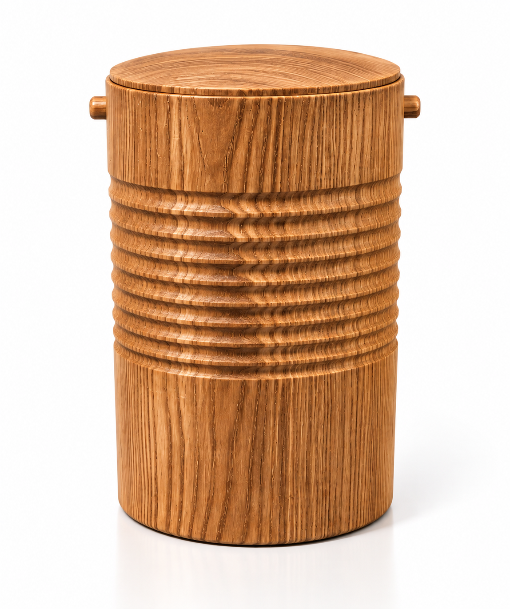
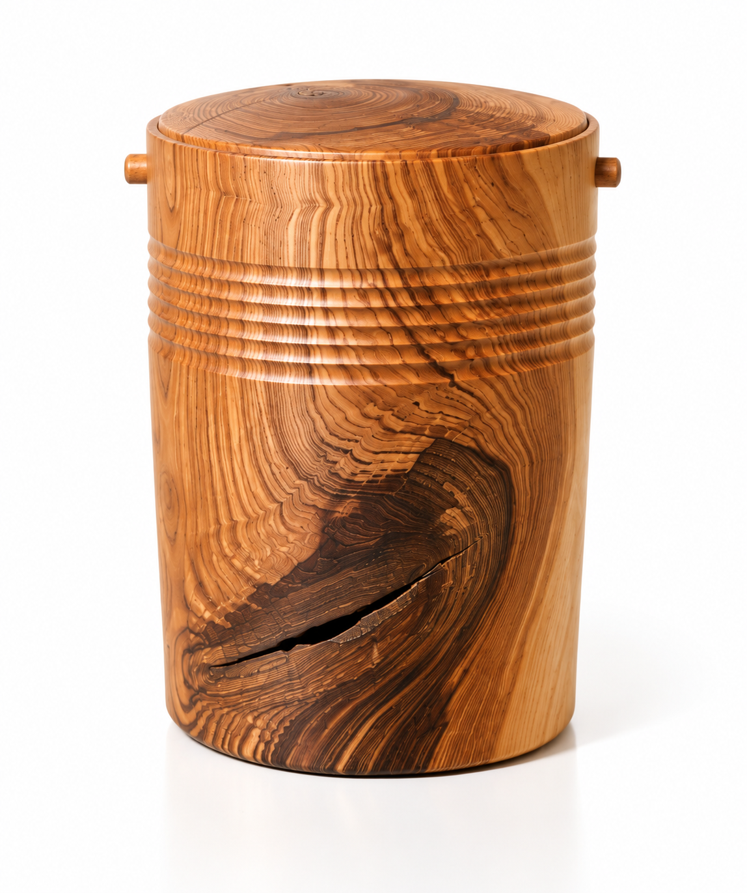
Das Holz
Heimische Hölzer.
Kurze Wege.
Verwendet werden größtenteils heimische Hölzer aus den umliegenden Dörfern und Tälern. So bleibt die Herkunft des Materials nachvollziehbar und jedes Stück trägt ein Stück seiner Region in sich.
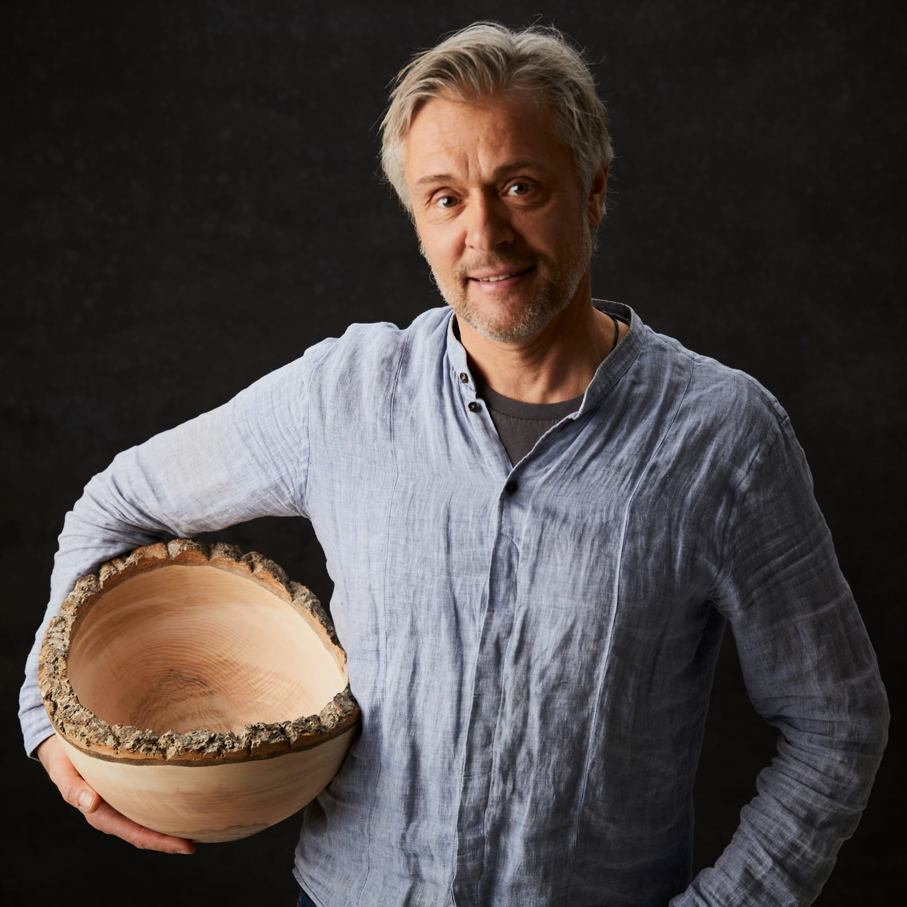
Über mich
Martin
Schützmeier.
Geboren im Allgäu.
Hier habe ich meine Leidenschaft fürs Drechseln gefunden und sie Schritt für Schritt zu meiner eigenen Werkstatt weiterentwickelt.
Als studierter Bauingenieur verbinde ich technisches Verständnis mit einem Gespür für Form, Material und handwerkliche Präzision.
Drechsler aus Leidenschaft.
Ausstellungen & Märkte
Handwerk, das man
vor Ort erleben kann.
Eine Auswahl kommender Veranstaltungen, bei denen ich mit handgedrechselten Unikaten vertreten bin.
CRAFT
11. & 12. Oktober
Die Craft der schönen Dinge
Designmarkt im Schlosssaal · Immenstadt
Ein Designmarkt mit ausgewählten handgemachten und besonderen Dingen. Auch die Arbeiten von mir werden dort ausgestellt.
Informationen zum Designmarkt ↗
WEITNAU
Samstag, 12. September 2026 · ab 10 Uhr
Traditioneller Herbstmarkt
Dorfmitte · Weitnau
Entlang der Hoheneggstraße bieten Händler und Kunsthandwerker ihre Waren an. Dazu kommen regionale Produkte, Musik, kulinarische Angebote und verschiedene Programmpunkte. Auch ich bin mit meinen Arbeiten dabei.
Informationen zum Herbstmarkt ↗Drechselwerkstatt
Wo aus Holz
Form wird.
Einblicke in die Werkstatt – weitere Bilder folgen.
01
Werkstattfoto
02
Werkstattfoto
03
Werkstattfoto
Kontakt & Besuch
Schau gerne
vorbei.
Werkstatt und Ausstellung in Weitnau. Für einen Besuch oder eine individuelle Anfrage gerne Kontakt aufnehmen.
Adresse
Engelsteig 3
87480 Weitnau
Telefon
E-Mail
Instagram